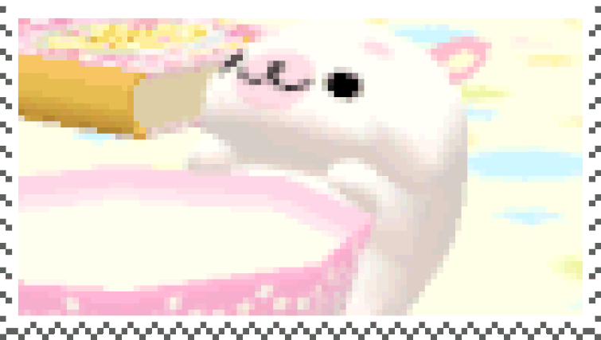
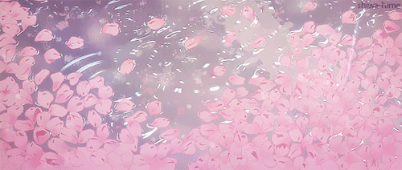
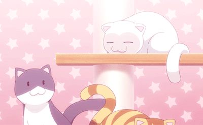
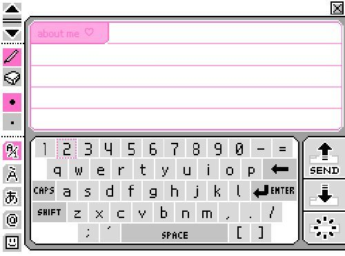
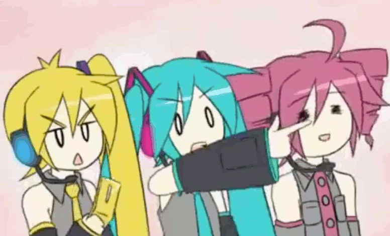
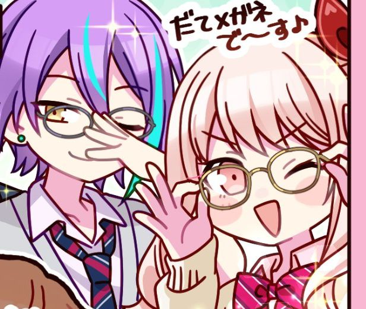

Welcome to my webpage! ⋆˚✿˖°
My name is liyana, and im the
webmaster of this page ദ്ദി(˵ •̀ ᴗ - ˵ ) ✧
**please view this page in full screen
for the best experience
Vocaloid (ボーカロイド, Bōkaroido) is a singing voice synthesizer software product. It started through a joint research project between Yamaha Corporation and the Music Technology Group at Pompeu Fabra University, Barcelona. Eventually, the software was made into the commercial product "Vocaloid" that was released in 2004. The first vocaloids were Leon and Lola, released in the March of 2004. Various voice banks have been released for use with the Vocaloid synthesizer technology since then. Each is sold as "a singer in a box" designed to act as a replacement for an actual singer. As such, they are often released under a moe anthropomorph avatar, however, many early voice banks released without an assigned avatar. These avatars are also referred to as Vocaloids, and are often marketed as virtual idols; some have gone on to perform at live concerts as an on-stage projection. Hatsune Miku, who was released on August 31, 2007, is the most well known Vocaloid, with over 100,000 songs in her catalogue, and the number is constantly growing as fans continue to make more and more songs using her voice bank.
I started listening to Vocaloid around 3 years ago, and its definitely some of my favorite music to listen to. My music taste is sort of all over the place, but Vocaloid music is something I've been consistenly listening to for a long time now. My collection of Vocaloid songs has especially been growing now that I've played Project Diva and Project Sekai. My favorite Vocaloid producers are Guchiry and Neru, and here are a list of some of my favorite songs by them, plus more! Feel free to check them out by clicking the link~!

| Title | Producer |
|---|---|
| Abnormality Dancing Girl | Guchiry |
| Orthodoxia | Guchiry |
| Nitro | Guchiry |
| Lost One's Weeping | Neru |
| How-to World Domination | Neru |
| Overslept | Neru |
| Datsugoku | Neru |
| Tokyo-Teddy Bear | Neru |
| Venom | Kairiki Bear |
| Hated by Life Itself | Iori Kanzaki |
| Love ka? | Hiiragi Kirai |
I also really like to read manga (even if I don't have as much time for it these days ߹𖥦߹)! I'm currently reading Nana, and
I'm liking it a lot so far. My favorite mangas are No.6 and Seraph of the End. No.6's ending made me
sob so hard, I'm not going to lie. It's a very dystopian but also sweet (?) story. It's a little obscure, but a classic manga nonetheless. I highly recommend both that and Seraph of the End
if you like dark fantasy or dystopian genre stories. I also like these manga too:
Like I mentioned in the Vocaloid section, I play Project Sekai and Project Diva, which are both Japanese rhythm games based around Vocaloid. But, there are more rhythm games out there that don't have anything to do with Vocaloid, and I have played a couple of them! My personal favorite aside from Project Sekai is Ensemble Stars, but I have also played Hypnosis Mic and BanG Dream!.
